<meta charset="utf-8"><title>11/14のコラム note貼り付け</title>
<style>
/* one column of numbered paste steps; text steps vs image steps differ by marker */
:root{--bg:#F5F4F0;--card:#FFFFFF;--ink:#1D2321;--mute:#5F665F;--line:#DCDAD2;--btn:#1F5FBF;--btnok:#2E8B4F;--img:#E9F3EC;--imgink:#22663B;--sans:'IBM Plex Sans JP','Hiragino Sans','Noto Sans JP',sans-serif}
@media (prefers-color-scheme:dark){:root:not([data-theme="light"]){--bg:#171A19;--card:#202423;--ink:#ECEDE8;--mute:#A3AAA2;--line:#343937;--btn:#4D8BE6;--btnok:#3FA866;--img:#1E2C23;--imgink:#8FD3A6;color-scheme:dark}}
:root[data-theme="dark"]{--bg:#171A19;--card:#202423;--ink:#ECEDE8;--mute:#A3AAA2;--line:#343937;--btn:#4D8BE6;--btnok:#3FA866;--img:#1E2C23;--imgink:#8FD3A6;color-scheme:dark}
body{background:var(--bg);color:var(--ink);font-family:var(--sans);font-size:15px;line-height:1.75;padding:20px 16px 60px}
main{max-width:680px;margin:0 auto;display:grid;gap:28px}
header h1{font-size:22px;margin:0 0 6px;text-wrap:balance}
header p{margin:0;color:var(--mute);font-size:14px}
nav{display:flex;gap:8px;flex-wrap:wrap;margin-top:12px}
nav a{border:1px solid var(--line);border-radius:999px;padding:4px 14px;color:var(--ink);text-decoration:none;font-size:14px;background:var(--card)}
.part h2{font-size:18px;line-height:1.5;margin:0 0 12px;text-wrap:balance;display:flex;gap:10px;align-items:baseline;flex-wrap:wrap}
.tag{font-size:13px;background:var(--ink);color:var(--bg);border-radius:6px;padding:1px 9px}
.steps{list-style:none;margin:0;padding:0;display:grid;gap:12px}
.st{background:var(--card);border:1px solid var(--line);border-radius:12px;padding:12px;min-width:0}
.hd{display:flex;align-items:center;gap:8px;margin-bottom:8px}
.no{width:26px;height:26px;border-radius:50%;background:var(--btn);color:#fff;display:inline-flex;align-items:center;justify-content:center;font-size:13px;font-weight:700;flex:0 0 26px}
.im .no{background:var(--btnok)}
.hd em{font-style:normal;font-size:12px;background:var(--img);color:var(--imgink);border-radius:6px;padding:0 8px}
.bx{font-size:13.5px;line-height:1.7;border:1px solid var(--line);border-radius:8px;padding:8px 10px;max-height:110px;overflow:auto;overflow-wrap:anywhere}
.bx.tall{max-height:150px}.bx p{margin:0 0 6px}.bx h2{font-size:14px;margin:8px 0 4px}.bx a{color:var(--btn)}
.st img{display:block;width:100%;max-width:100%;border:1px solid var(--line);border-radius:8px}
.sub{font-size:12.5px;color:var(--mute);margin:6px 0 0}
.cp{width:100%;margin-top:8px;padding:12px;border:0;border-radius:10px;background:var(--btn);color:#fff;font:600 15px var(--sans);cursor:pointer}
.cp.ok{background:var(--btnok)}.cp.dl{background:var(--btnok)}.cp:focus-visible{outline:3px solid var(--ink);outline-offset:2px}
.xh{font-size:15px;margin:20px 0 10px}
.fb{font-size:13px;line-height:1.7;margin:8px 0 0;padding:8px 10px;border-radius:8px;background:var(--img);color:var(--imgink)}
.opts{display:grid;grid-template-columns:repeat(auto-fill,minmax(240px,1fr));gap:10px}
.opt{min-width:0}.opt img{display:block;width:100%;border:1px solid var(--line);border-radius:8px}
.ol{display:flex;align-items:center;gap:8px;margin-top:6px}.ol b{font-size:13px;flex:0 0 auto}.ol .on{font-size:12.5px;color:var(--mute);flex:1;min-width:0}.ol .cp{width:auto;flex:0 0 auto;padding:9px 14px}.ol .cp{margin:0;padding:9px}
.toast{font-size:13px;color:var(--mute);margin-top:6px}
</style>
<main><header><h1>11/14のコラム note貼り付け</h1><p>いま公開済みは8本です。青い番号は文章、緑は画像です。</p><nav><a href="#p1">1</a><a href="#p2">2</a><a href="#p3">3</a><a href="#p4">4</a><a href="#p5">5</a><a href="#p6">6</a><a href="#p7">7</a><a href="#p8">8</a></nav></header><section class="part" id="p1"><h2><span class="tag">OFF GRID</span>130Rが「Umamusume 130R」に　F1日本GP中は広告なし</h2><p class="sub">サイトに公開：18:20</p><ol class="steps">
<li class="st im"><div class="hd"><span class="no">1</span><b>見出し画像</b><em>画像</em></div>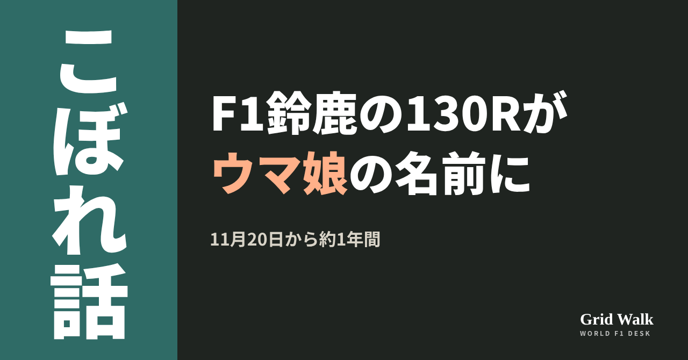<button class="cp dl" data-img="img/umamusume-130r-suzuka-20261114.png" data-name="umamusume-130r-suzuka-20261114_見出し画像.png">ダウンロード</button></li>
<li class="st"><div class="hd"><span class="no">2</span><b>タイトル</b></div><div class="bx" id="p1t">130Rが「Umamusume 130R」に　F1日本GP中は広告なし</div><button class="cp" data-plain="p1t">タイトルをコピー</button></li>
<li class="st"><div class="hd"><span class="no">3</span><b>本文</b></div><div class="bx tall" id="p1r"><p>鈴鹿サーキットの名物コーナー、130Rに新しい名前がつきます。11月20日（金）から約1年間、名前は「Umamusume 130R」。ゲーム『ウマ娘 プリティーダービー』を開発・運営するCygamesが、ネーミングライツ（名前をつける権利）を取得しました。あわせて『ウマ娘』は、2027年のF1日本GPで初めてのファウンディングパートナーに就任しました。発表は11月12日でした。</p><p>Cygamesの発表とF1公式のコース紹介、日本GPチケットのコラムへのリンクはサイトで → <a href="https://f1gridwalk.github.io/lens/umamusume-130r-suzuka-20261114/?utm_source=note&amp;utm_campaign=umamusume-130r-suzuka-20261114">https://f1gridwalk.github.io/lens/umamusume-130r-suzuka-20261114/?utm_source=note&amp;utm_campaign=umamusume-130r-suzuka-20261114</a></p><h2>半径の数字だった名前に、ゲームの名前</h2><p>F1公式のコース紹介によると、130Rは左コーナーです。ヘアピンとスプーンカーブを過ぎた先にあり、ふつうはアクセル全開で抜けます。F1でも思い切った追い抜きが生まれてきた場所です。名前の由来について、F1公式の2015年の記事は、単にコーナーの半径から来た名前だと書き、こう紹介しています。</p><blockquote><p>「世界でもっとも偉大な、そしてもっとも速いコーナーの一つとして、長く知られてきた」（F1公式、2015年／イギリス）</p></blockquote><p>Cygamesの発表も、130Rをこう説明しています。</p><blockquote><p>「鈴鹿サーキットの西ストレートの先に位置する、世界的にも知られる高速コーナーです」（Cygames公式発表／日本）</p></blockquote><h2>スーパーフォーミュラから広告、F1の週末は出さない</h2><p>Cygamesによると、このコーナーでの広告は、11月21日（土）・22日（日）の全日本スーパーフォーミュラ選手権 第11戦・第12戦（第25回JAF鈴鹿グランプリ）から出す予定です。前日20日（金）の非公式セッションでも見られるとしています。</p><p>一方で、発表には、2027年のF1日本GPの開催中は、このコーナーに広告を出さないと書かれています。AUTOSPORT web（carview!に転載）も、F1日本GPの開催時にはUmamusume 130Rでの広告はないと伝えました。なぜF1の週末だけ出さないのかは、発表には書かれていません。</p><h2>F1日本GP、初めてのファウンディングパートナー</h2><p>ファウンディングパートナーとは何か。Cygamesの発表はこう書いています。</p><blockquote><p>「F1日本グランプリの価値向上と将来の成長をともに目指す、最上位クラスのパートナーです」（Cygames公式発表／日本）</p></blockquote><p>AUTOSPORT webは、日本GPには例年30万人以上の観客が集まると紹介しています。</p><p>なぜF1なのか。発表は『ウマ娘』を、プレイヤーであるトレーナーが担当のウマ娘と二人三脚でレースの勝利を目指すゲームだと説明し、そうした姿勢が「ドライバーをはじめとするチームのメンバーが一丸となって頂点を目指すF1にも通じる」と考えている、としています。</p><p>2027年の日本GPは、F1の第4戦として4月9〜11日に開かれます。会場のGP SQUARE FANZONEには特設ブースを出す予定で、詳しいことは後日、『ウマ娘』の公式サイトやSNSで知らせるそうです。チケットは11月15日（日）11時に発売です。席のルールの変わりようは、こちらのコラムにまとめています（https://f1gridwalk.github.io/lens/suzuka-sprint-tickets-20261103/ ）。</p><p>130Rは、半径の数字だけでできた飾り気のない名前でした。編集部としては、新しい名前にも130Rの4文字がそのまま残っているので、これまでの呼び方に慣れたファンにも受け入れやすい形になっていると見ています。</p><p><strong>あなたは、新しい名前で呼びますか？ それとも、これまでどおり130Rと呼びますか？</strong></p><p>━━━━━━━━━━</p><p><strong>F1 Grid Walk では、世界のF1ニュースを毎日日本語でまとめています。</strong></p><p>海外の記事の要約を、毎日載せています。</p><p><a href="https://f1gridwalk.github.io/">https://f1gridwalk.github.io/</a></p><p>ほかの海外記事も読みたい方は、F1 Grid Walkへ。</p><p><a href="https://f1gridwalk.github.io/lens/umamusume-130r-suzuka-20261114/">https://f1gridwalk.github.io/lens/umamusume-130r-suzuka-20261114/</a></p><p>━━━━━━━━━━</p><p><a href="https://www.cygames.co.jp/news/id-25155/">出典：Cygames公式（日本）</a></p><p><a href="https://www.cygames.co.jp/en/news/id-25178">出典：Cygames公式（英語版）（日本）</a></p><p><a href="https://carview.yahoo.co.jp/news/detail/fb17e9e954634f4b3d6edb05f3316df1b9214a5b">出典：AUTOSPORT web（carview!転載）（日本）</a></p><p><a href="https://www.formula1.com/en/latest/article/circuit-guide-everything-you-need-to-know-about-the-suzuka-circuit.2BbgsRdkeux78UBGbmYiZV">出典：F1公式（イギリス）</a></p><p><a href="https://www.formula1.com/en/latest/article/amazing-overtakes-and-incredible-saves-at-130r-suzukas-fastest.6NDU4tn77mdoDbeHSyhB0G">出典：F1公式（イギリス）</a></p></div><button class="cp" data-rich="p1r">本文をコピー</button></li>
<li class="st"><div class="hd"><span class="no">4</span><b>ハッシュタグ</b></div><div class="bx" id="p1h">#F1 #F1jp #鈴鹿サーキット #日本GP #ウマ娘 #130R #Cygames #F1こぼれ話 #OFFGRID</div><button class="cp" data-plain="p1h">タグをコピー</button></li>
</ol><h3 class="xh">X</h3><ol class="steps">
<li class="st im"><div class="hd"><b>X用の画像</b><em>画像</em></div>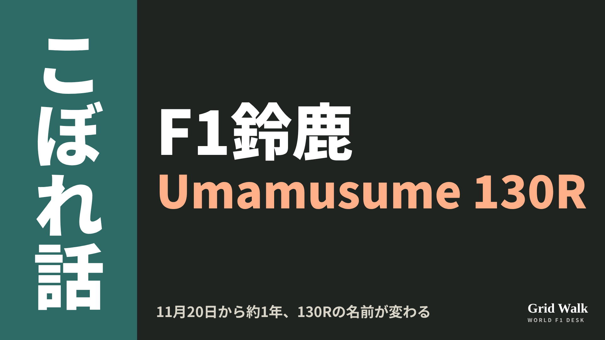<button class="cp dl" data-img="img/x_umamusume-130r-suzuka-20261114.png" data-name="x_umamusume-130r-suzuka-20261114.png">ダウンロード</button></li>
<li class="st"><div class="hd"><b>① noteをシェアするときの文</b></div><div class="bx" id="p1x0">鈴鹿の130Rが、11月20日から約1年間「Umamusume 130R」に。『ウマ娘』はF1日本GPで初めてのファウンディングパートナーにもなりました。ただし2027年の日本GPの開催中、このコーナーに広告は出ません。noteにまとめました #F1jp #ウマ娘</div><button class="cp" data-plain="p1x0">コピー</button></li>
<li class="st"><div class="hd"><b>② ①への返信</b></div><div class="bx" id="p1x1">ほかの海外記事も読みたい方は、F1 Grid Walkへ。
https://f1gridwalk.github.io/lens/umamusume-130r-suzuka-20261114/?utm_source=x&amp;utm_campaign=umamusume-130r-suzuka-20261114</div><button class="cp" data-plain="p1x1">コピー</button></li>
<li class="st"><div class="hd"><b>③ ②への返信</b></div><div class="bx" id="p1x2">毎日の海外F1ニュースは、日本語でこちらにまとめています。
https://f1gridwalk.github.io/</div><button class="cp" data-plain="p1x2">コピー</button></li>
</ol></section><section class="part" id="p2"><h2><span class="tag">OFF GRID</span>ルクレールを批判した英紙記者、FIAが取材資格を残り3戦取り消し</h2><p class="sub">サイトに公開：18:21</p><ol class="steps">
<li class="st im"><div class="hd"><span class="no">1</span><b>見出し画像</b><em>画像</em></div>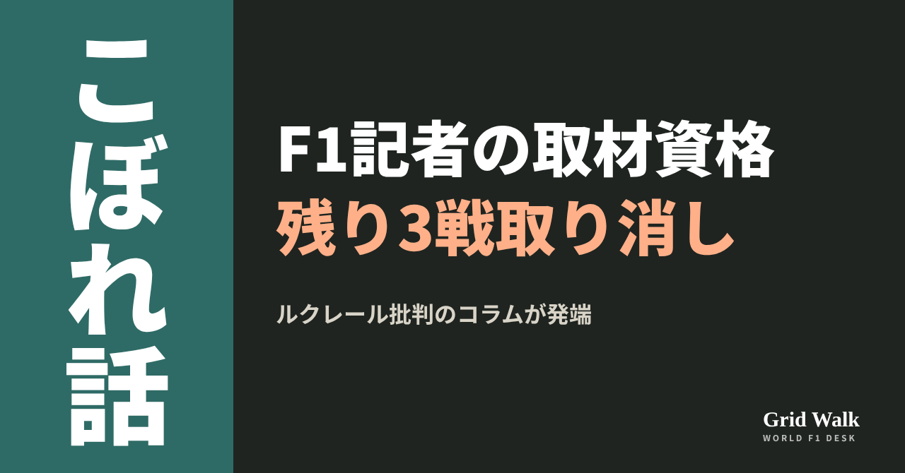<button class="cp dl" data-img="img/fia-mcevoy-accreditation-20261114.png" data-name="fia-mcevoy-accreditation-20261114_見出し画像.png">ダウンロード</button></li>
<li class="st"><div class="hd"><span class="no">2</span><b>タイトル</b></div><div class="bx" id="p2t">ルクレールを批判した英紙記者、FIAが取材資格を残り3戦取り消し</div><button class="cp" data-plain="p2t">タイトルをコピー</button></li>
<li class="st"><div class="hd"><span class="no">3</span><b>本文</b></div><div class="bx tall" id="p2r"><p>ラスベガスGPを前に、FIAが、英タブロイド紙デイリー・メールのF1担当記者ジョナサン・マケボイ（Jonathan McEvoy）の取材資格を、今季の残り3戦（ラスベガス、カタール、アブダビ）について取り消しました。理由は、シャルル・ルクレール（フェラーリ）を強い言葉で批判したコラムでした（ロイター通信、英テレグラフ紙）。</p><p>FIAの手紙の言葉と、各国の元の記事へのリンクはサイトで → <a href="https://f1gridwalk.github.io/lens/fia-mcevoy-accreditation-20261114/?utm_source=note&amp;utm_campaign=fia-mcevoy-accreditation-20261114">https://f1gridwalk.github.io/lens/fia-mcevoy-accreditation-20261114/?utm_source=note&amp;utm_campaign=fia-mcevoy-accreditation-20261114</a></p><h2>発端はメキシコの1周目</h2><p>ロイターによると、コラムは11月4日のもの。メキシコシティGPの1周目、ルクレールとチームメイトのルイス・ハミルトンは首位を争って4コーナーで2台ともコース外に出て、芝生を横切って前に出たルクレールに、のちに5秒の罰が出ました。オランダのF1Maximaalによると、マケボイはハミルトンの側に立ち、ルクレールをののしる言葉を使いました。この争いは https://f1gridwalk.github.io/lens/hamilton-leclerc-rift-20261107/ で。</p><h2>FIA「プロとしての基準に届いていない」</h2><p>英テレグラフ紙によると、FIAのアルベルト・ヴィラレアル事務局長（Alberto Villarreal）は、マケボイへの手紙でこう書きました。</p><blockquote><p>「FIAは、あなたの記事が報道関係者に求められるプロとしての基準に届いていないと考えます」「2026年シーズンの残りについて、即時、あなたの取材資格を取り消します」（FIAの手紙、テレグラフ／イギリス）</p></blockquote><p>根拠は、2026年の取材資格のガイドラインにあるFIAの裁量です（テレグラフ）。ロイターによると、FIAは、予告なしに取り消せる決まりであること、同紙が別の記者を送るのは妨げないことも説明しています。</p><h2>「報道の自由への攻撃」と本人の言い分</h2><p>デイリー・メールは抗議として残り3戦を報じないと表明（ロイター）。英テレグラフ紙によると、同紙のスポーツ部門責任者クリス・ディーンはこう話しました。</p><blockquote><p>「これは前例のない、とんでもない報道の自由への攻撃です」「1人のドライバーへの穏やかで公正な批判に、FIAがこれほど高圧的に反応するなら、危うい領域に入っています」（ディーン、テレグラフ／イギリス）</p></blockquote><p>英国の編集者協会（Society of Editors）も、掲載された批判を理由に資格を取り消すのは独立したスポーツ報道を脅かすと非難しました（ロイター）。F1の元最高経営責任者バーニー・エクレストンは、デイリー・メールに「ばかげている。FIAがなぜそんなことをするのか分からない」と話しています（テレグラフ）。</p><p>マケボイ本人はデイリー・メールのコラムで反論。F1Maximaalによると、事務局長から来季の初めに再開できる可能性を告げられたとも書きました。FIAは公には認めていません（ロイター）。</p><blockquote><p>「僕の論評は、ハミルトンより控えめだった」「でも、ジャーナリズムの核は表現の自由だ」（マケボイ、デイリー・メールのコラム。F1Maximaal／オランダが伝えた）</p></blockquote><p>マケボイはその後のコラムで、フェラーリのフレデリック・バスール代表が決定を促したとほのめかしました。一方、フェラーリの関係者は米ジ・アスレチックに、バスールは苦情を出していないと話しています（ロイター）。ロイターとテレグラフの記事に、ルクレール本人のコメントは載っていません。</p><p>論点は2つ。1つは報道の自由。書いた中身を理由に取材の場から外せば批判がしにくくなる、というのが新聞側と編集者協会の立場です。もう1つは取材の規律。資格はFIAのガイドラインのもとで出すもので、FIAはその基準に照らして判断した、という立場です。</p><p><strong>書いた中身を理由に、取材の場から外す。あなたは、どこまでならありだと思いますか？</strong></p><p>━━━━━━━━━━</p><p><strong>F1 Grid Walk では、世界のF1ニュースを毎日日本語でまとめています。</strong></p><p>海外の記事の要約を、毎日載せています。</p><p><a href="https://f1gridwalk.github.io/">https://f1gridwalk.github.io/</a></p><p>ほかの海外記事も読みたい方は、F1 Grid Walkへ。</p><p><a href="https://f1gridwalk.github.io/lens/fia-mcevoy-accreditation-20261114/">https://f1gridwalk.github.io/lens/fia-mcevoy-accreditation-20261114/</a></p><p>━━━━━━━━━━</p><p><a href="https://www.f1maximaal.nl/formule-1/fia-schorst-britse-journalist-na-uitspraken-over-leclerc-verslaggever-haalt-keihard-uit-naar-vasseur">出典：F1Maximaal（オランダ）</a></p><p><a href="https://www.arabnews.com/motorsport/fia-bans-journalist-for-criticizing-ferraris-charles-leclerc-3011818">出典：ロイター通信（Arab News 掲載）（イギリス）</a></p><p><a href="https://sports.yahoo.com/articles/f1-bans-daily-mail-journalist-211919698.html">出典：テレグラフ（Yahoo Sports 掲載）（イギリス）</a></p></div><button class="cp" data-rich="p2r">本文をコピー</button></li>
<li class="st"><div class="hd"><span class="no">4</span><b>ハッシュタグ</b></div><div class="bx" id="p2h">#F1 #F1jp #ルクレール #フェラーリ #FIA #報道の自由 #ラスベガスGP #デイリーメール #F1こぼれ話 #OFFGRID</div><button class="cp" data-plain="p2h">タグをコピー</button></li>
</ol><h3 class="xh">X</h3><ol class="steps">
<li class="st im"><div class="hd"><b>X用の画像</b><em>画像</em></div>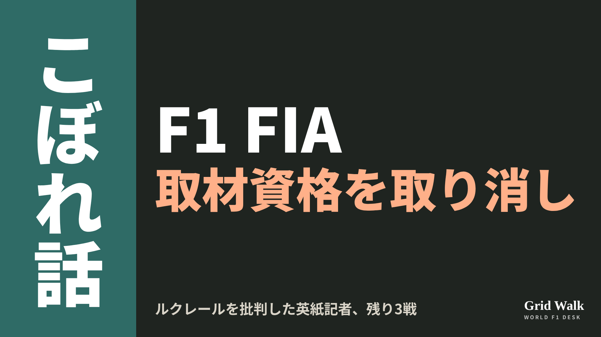<button class="cp dl" data-img="img/x_fia-mcevoy-accreditation-20261114.png" data-name="x_fia-mcevoy-accreditation-20261114.png">ダウンロード</button></li>
<li class="st"><div class="hd"><b>① noteをシェアするときの文</b></div><div class="bx" id="p2x0">メキシコシティGPのあとルクレールを強く批判したコラムを理由に、FIAが英デイリー・メールの記者の取材資格を残り3戦取り消しました。新聞側は「報道の自由への攻撃」と反発。noteにまとめました #F1jp #FIA</div><button class="cp" data-plain="p2x0">コピー</button></li>
<li class="st"><div class="hd"><b>② ①への返信</b></div><div class="bx" id="p2x1">ほかの海外記事も読みたい方は、F1 Grid Walkへ。
https://f1gridwalk.github.io/lens/fia-mcevoy-accreditation-20261114/?utm_source=x&amp;utm_campaign=fia-mcevoy-accreditation-20261114</div><button class="cp" data-plain="p2x1">コピー</button></li>
<li class="st"><div class="hd"><b>③ ②への返信</b></div><div class="bx" id="p2x2">毎日の海外F1ニュースは、日本語でこちらにまとめています。
https://f1gridwalk.github.io/</div><button class="cp" data-plain="p2x2">コピー</button></li>
</ol></section><section class="part" id="p3"><h2><span class="tag">OFF GRID</span>ラスベガスは路面10〜12℃　フェルスタッペン、鍵はタイヤの温まり</h2><p class="sub">サイトに公開：18:22</p><ol class="steps">
<li class="st im"><div class="hd"><span class="no">1</span><b>見出し画像</b><em>画像</em></div>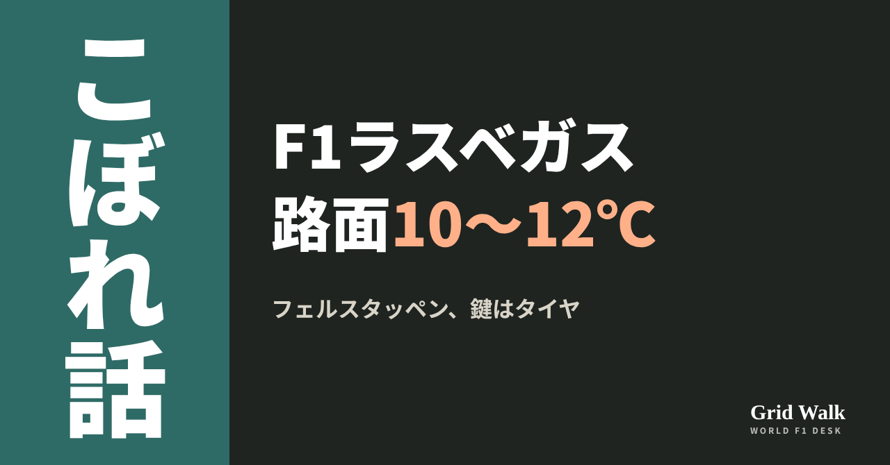<button class="cp dl" data-img="img/verstappen-las-vegas-tyres-20261114.png" data-name="verstappen-las-vegas-tyres-20261114_見出し画像.png">ダウンロード</button></li>
<li class="st"><div class="hd"><span class="no">2</span><b>タイトル</b></div><div class="bx" id="p3t">ラスベガスは路面10〜12℃　フェルスタッペン、鍵はタイヤの温まり</div><button class="cp" data-plain="p3t">タイトルをコピー</button></li>
<li class="st"><div class="hd"><span class="no">3</span><b>本文</b></div><div class="bx tall" id="p3r"><p>路面温度は10〜12℃。来週のラスベガスGPは3日間を通してこのくらいの見込みだと、オランダのRacingNews365が11月13日に伝えました。去年このレースを2番グリッドから勝ったマックス・フェルスタッペン（レッドブル）は、鍵はタイヤを働かせることだと話しています。</p><p>元の記事と、電気の速度の上限を表で読めるDEEP GRIDへのリンクはサイトで → <a href="https://f1gridwalk.github.io/lens/verstappen-las-vegas-tyres-20261114/?utm_source=note&amp;utm_campaign=verstappen-las-vegas-tyres-20261114">https://f1gridwalk.github.io/lens/verstappen-las-vegas-tyres-20261114/?utm_source=note&amp;utm_campaign=verstappen-las-vegas-tyres-20261114</a></p><h2>去年の優勝は当てにしない</h2><p>ラスベガスGPは今季の第21戦。決勝は現地21日（土）の20時、日本時間22日（日）の13時スタートです（F1公式の日程）。今のコースでの優勝は、2023年と2025年がフェルスタッペン、2024年がメルセデスのジョージ・ラッセルでした（F1公式の結果）。</p><p>記事によると、本人はその結果をあまり当てにしていません。レッドブルが倒すべき相手になるかと聞かれると、こう答えました。</p><blockquote><p>「まったく分からない。ベガスはほかとまるでちがうし、誰にとっても理解するのがとても難しいから」（フェルスタッペン、RacingNews365／オランダ）</p></blockquote><blockquote><p>「問題は、あそこはとても寒いので、車ごとにまったくちがう動きになることだ」「ああいうコースで、急にものすごくよく走る車もある」（フェルスタッペン、RacingNews365／オランダ）</p></blockquote><h2>なめらかな路面で、タイヤが滑る</h2><p>記事によると、ラスベガスの市街地の路面はなめらかで、タイヤが滑りやすい。そのため、グリップの高いコースのようにタイヤに熱がたまるのではなく、グレイニング（表面が荒れてグリップが落ちる現象）や、タイヤの芯の温度がそろわない状態につながりやすいといいます。レッドブルは昔から、グリップが低く路面の冷たいコースにある程度苦しんできた、とも記事は書いています（グレイニングは https://f1gridwalk.github.io/deep/rules/graining/ ）。</p><blockquote><p>「そのせいで、ふだんは僕らのいちばん得意なコースではないと言わざるを得ない」「でも、タイヤを働かせられるか、見てみよう。正直、あそこではそれが鍵だ」（フェルスタッペン、RacingNews365／オランダ）</p></blockquote><h2>長い直線は、電気の上限との勝負</h2><p>記事によると、フェルスタッペンは温度とは別に、今季のエネルギーの規則に結びついた課題として長い直線を挙げました。</p><blockquote><p>「とても長い直線だから、直線の途中で前の車の後ろに入って、いくらか最高速を稼ごうとする必要があると思う」「それが今年のゲームなんだ」「あの直線でのエネルギーの管理は、とても、とても難しくなる」（フェルスタッペン、RacingNews365／オランダ）</p></blockquote><blockquote><p>「もしかしたら、モンツァに少し似たコースになるかもしれない。お互いにスリップストリームを使うのが、かなり有利なコースだ」（フェルスタッペン、RacingNews365／オランダ）</p></blockquote><p>背景には、速度が上がるほど電気の出力の上限が下がる、今季の技術規則の決まりがあります。英The Raceの解説によると、オーバーテイクモードを使う車では、最大350kWの出力が時速337.5kmから下がり始め、355kmでゼロになります。メキシコシティGPで追い抜きを難しくしたのが、この上限でした（ https://f1gridwalk.github.io/deep/mexico-no-overtaking/ ）。The Raceによると、2027年の規則からはなくなります。</p><p>編集部としては、ラスベガスでも長い直線でこの上限に届く場面があり、前の車の後ろに入る位置取りが、予選でも決勝でも大事になると見ています。</p><p><strong>冷えた路面でのタイヤの温まりと、直線でのスリップストリーム。ラスベガスの勝負を分けるのは、どちらだと思いますか？</strong></p><p>━━━━━━━━━━</p><p><strong>F1 Grid Walk では、世界のF1ニュースを毎日日本語でまとめています。</strong></p><p>海外の記事の要約を、毎日載せています。</p><p><a href="https://f1gridwalk.github.io/">https://f1gridwalk.github.io/</a></p><p>ほかの海外記事も読みたい方は、F1 Grid Walkへ。</p><p><a href="https://f1gridwalk.github.io/lens/verstappen-las-vegas-tyres-20261114/">https://f1gridwalk.github.io/lens/verstappen-las-vegas-tyres-20261114/</a></p><p>━━━━━━━━━━</p><p><a href="https://racingnews365.com/max-verstappen-reveals-key-red-bull-factor-in-facing-major-las-vegas-issue">出典：RacingNews365（オランダ）</a></p><p><a href="https://www.the-race.com/formula-1/the-stupid-speed-limit-that-neutered-mexican-gp-explained">出典：The Race（イギリス）</a></p><p><a href="https://www.formula1.com/en/latest/article/formula-1-heineken-las-vegas-grand-prix-2026.1qmWzcBwKK5hkTbYbhVC22">出典：Formula1.com（イギリス）</a></p><p><a href="https://www.formula1.com/en/racing/2026">出典：Formula1.com（イギリス）</a></p><p><a href="https://www.formula1.com/en/results/2023/races/1225/las-vegas/race-result">出典：Formula1.com（イギリス）</a></p><p><a href="https://www.formula1.com/en/results/2024/races/1250/las-vegas/race-result">出典：Formula1.com（イギリス）</a></p><p><a href="https://www.formula1.com/en/results/2025/races/1274/las-vegas/race-result">出典：Formula1.com（イギリス）</a></p><p><a href="https://www.formula1.com/en/latest/article/verstappen-beats-norris-for-dominant-las-vegas-gp-victory-as-piastri.6u1Op0SO7YQa2bwJOq8DVI">出典：Formula1.com（イギリス）</a></p></div><button class="cp" data-rich="p3r">本文をコピー</button></li>
<li class="st"><div class="hd"><span class="no">4</span><b>ハッシュタグ</b></div><div class="bx" id="p3h">#F1 #F1jp #フェルスタッペン #レッドブル #ラスベガスGP #タイヤ #F1技術 #F1こぼれ話 #OFFGRID</div><button class="cp" data-plain="p3h">タグをコピー</button></li>
</ol><h3 class="xh">X</h3><ol class="steps">
<li class="st im"><div class="hd"><b>X用の画像</b><em>画像</em></div>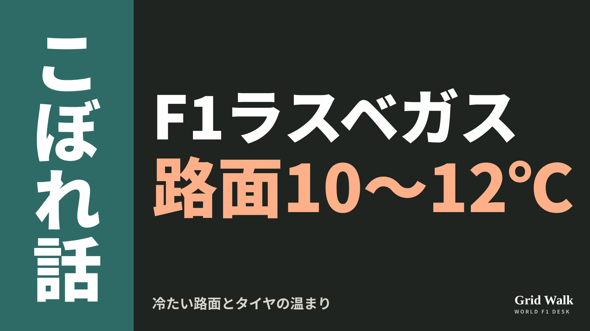<button class="cp dl" data-img="img/x_verstappen-las-vegas-tyres-20261114.png" data-name="x_verstappen-las-vegas-tyres-20261114.png">ダウンロード</button></li>
<li class="st"><div class="hd"><b>① noteをシェアするときの文</b></div><div class="bx" id="p3x0">来週のラスベガスは路面10〜12℃の見込み。去年の勝者フェルスタッペンは、タイヤを働かせられるかを鍵に挙げ、長い直線での電気の使い方にも触れました。noteにまとめました #F1jp #ラスベガスGP</div><button class="cp" data-plain="p3x0">コピー</button></li>
<li class="st"><div class="hd"><b>② ①への返信</b></div><div class="bx" id="p3x1">ほかの海外記事も読みたい方は、F1 Grid Walkへ。
https://f1gridwalk.github.io/lens/verstappen-las-vegas-tyres-20261114/?utm_source=x&amp;utm_campaign=verstappen-las-vegas-tyres-20261114</div><button class="cp" data-plain="p3x1">コピー</button></li>
<li class="st"><div class="hd"><b>③ ②への返信</b></div><div class="bx" id="p3x2">毎日の海外F1ニュースは、日本語でこちらにまとめています。
https://f1gridwalk.github.io/</div><button class="cp" data-plain="p3x2">コピー</button></li>
</ol></section><section class="part" id="p4"><h2><span class="tag">OFF GRID</span>ノリス、41歳ハミルトンを見て「何年も何年も戦えると信じられる」</h2><p class="sub">サイトに公開：18:23</p><ol class="steps">
<li class="st im"><div class="hd"><span class="no">1</span><b>見出し画像</b><em>画像</em></div>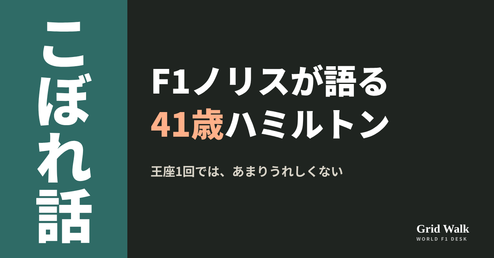<button class="cp dl" data-img="img/norris-hamilton-longevity-20261114.png" data-name="norris-hamilton-longevity-20261114_見出し画像.png">ダウンロード</button></li>
<li class="st"><div class="hd"><span class="no">2</span><b>タイトル</b></div><div class="bx" id="p4t">ノリス、41歳ハミルトンを見て「何年も何年も戦えると信じられる」</div><button class="cp" data-plain="p4t">タイトルをコピー</button></li>
<li class="st"><div class="hd"><span class="no">3</span><b>本文</b></div><div class="bx tall" id="p4r"><p>11月8日のサンパウロGPで、ルイス・ハミルトンはF1で400回目のスタートを切りました。41歳です。その長さについて聞かれたランド・ノリスが、自分の先の見え方が変わったと話しています。去年26歳で初めての王座を取ったノリスですが、ハミルトンを見ると、タイトル1回ではあまりうれしくなくなるそうです。</p><p>ノリスの言葉を伝えた元の記事へのリンクと、ハミルトンの400戦目のSTORYへの案内はサイトで → <a href="https://f1gridwalk.github.io/lens/norris-hamilton-longevity-20261114/?utm_source=note&amp;utm_campaign=norris-hamilton-longevity-20261114">https://f1gridwalk.github.io/lens/norris-hamilton-longevity-20261114/?utm_source=note&amp;utm_campaign=norris-hamilton-longevity-20261114</a></p><h2>400戦、20季続けて</h2><p>イギリスのRacingNews365が11月14日に伝えたノリスの言葉は、こうです。</p><blockquote><p>「あれだけ長いあいだ、そして今になっても、彼がやれていることは本当に信じられない」（ノリス、RacingNews365／イギリス）</p></blockquote><p>RacingNews365によると、400戦に届いたのはフェルナンド・アロンソに次いで2人目。アロンソには2019年と2020年にF1を離れた時期がありますが、ハミルトンは20季続けて休まずに走ってきました。F1公式サイトのドライバー紹介では、王座は7回、優勝は106回です。400戦目の週末の流れは https://f1gridwalk.github.io/topics/hamilton-400th-start/ で。</p><h2>ルクレールとの勝負</h2><p>ノリスが特に挙げたのは、フェラーリのチームメイト、シャルル・ルクレールとの勝負でした。</p><blockquote><p>「シャルルと戦う姿を見ると…シャルルは楽にグリッドで最高の1人に入ると思うし、とんでもなく速い。そのシャルルに、ルイスは今もいい勝負をしている。特に今年は…」（ノリス、RacingNews365／イギリス）</p></blockquote><blockquote><p>「たしかに、前の何年かは、あまり好きじゃなかったように見えた。あの規則の車だった最近の何年かは」「でも今は元どおり、前で戦って、自分が最高の1人だと示しているように見える」（同）</p></blockquote><p>RacingNews365は、ハミルトンが2022〜2025年の車に苦しみ、引退をすすめる声もあったと書いています。今年は6月のバルセロナで勝ち、2年近く続いた勝てない時期を終えました。F1公式の順位表では、ハミルトンは261点で4位。2位のマックス・フェルスタッペン（279点）から6位のノリス（246点）まで、5人が33点の中にいます。</p><h2>王座1回では</h2><blockquote><p>「彼は僕たちの多くにとって、いい刺激だ」「僕がそこまで行くとは、まったく思っていないけど、キャリアの先の楽しみになる」（ノリス、RacingNews365／イギリス）</p></blockquote><blockquote><p>「チャンピオン1回で満足していた。でもルイスを見ると、1回しか取っていないことが、あまりうれしくなくなる。いい意味でね」（同）</p></blockquote><blockquote><p>「あの年齢で、あの調子の彼を見ると、これまで以上に、まだ何年も何年も戦えると信じられる。それを楽しみにしている」（同）</p></blockquote><p>ハミルトンほど長くは走らない、と言いながら、何年も先まで戦うつもりだという話です。編集部としては、41歳まで走るかどうかよりも、王座1回で終わりにしないという気持ちのほうが、ノリスの言葉の中心だと見ています。</p><p>残りはラスベガス、カタール、アブダビの3戦。刺激をくれる相手は、2位を争う相手でもあります。ラスベガスでは、ノリスとハミルトンの15点差がどう動くかも見どころになりそうです。</p><p><strong>あなたは、40歳を過ぎても走るノリスを見てみたいですか？</strong></p><p>━━━━━━━━━━</p><p><strong>F1 Grid Walk では、世界のF1ニュースを毎日日本語でまとめています。</strong></p><p>海外の記事の要約を、毎日載せています。</p><p><a href="https://f1gridwalk.github.io/">https://f1gridwalk.github.io/</a></p><p>ほかの海外記事も読みたい方は、F1 Grid Walkへ。</p><p><a href="https://f1gridwalk.github.io/lens/norris-hamilton-longevity-20261114/">https://f1gridwalk.github.io/lens/norris-hamilton-longevity-20261114/</a></p><p>━━━━━━━━━━</p><p><a href="https://racingnews365.com/lewis-hamilton-fuels-lando-norris-suspicion-pretty-unbelievable">出典：RacingNews365（イギリス）</a></p><p><a href="https://www.formula1.com/en/drivers/lewis-hamilton">出典：Formula1.com（イギリス）</a></p><p><a href="https://www.formula1.com/en/results/2026/drivers">出典：Formula1.com（イギリス）</a></p><p><a href="https://www.formula1.com/en/results/2026/races">出典：Formula1.com（イギリス）</a></p></div><button class="cp" data-rich="p4r">本文をコピー</button></li>
<li class="st"><div class="hd"><span class="no">4</span><b>ハッシュタグ</b></div><div class="bx" id="p4h">#F1 #F1jp #ノリス #ハミルトン #マクラーレン #フェラーリ #ルクレール #サンパウロGP #F1こぼれ話 #OFFGRID</div><button class="cp" data-plain="p4h">タグをコピー</button></li>
</ol><h3 class="xh">X</h3><ol class="steps">
<li class="st im"><div class="hd"><b>X用の画像</b><em>画像</em></div>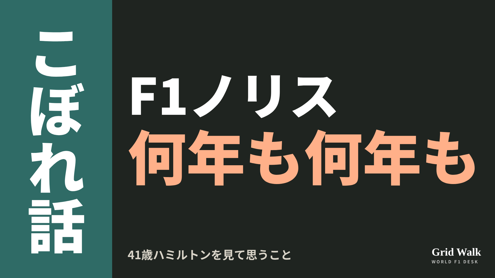<button class="cp dl" data-img="img/x_norris-hamilton-longevity-20261114.png" data-name="x_norris-hamilton-longevity-20261114.png">ダウンロード</button></li>
<li class="st"><div class="hd"><b>① noteをシェアするときの文</b></div><div class="bx" id="p4x0">400戦目を迎えた41歳のハミルトンを見て、ノリスは王座1回では「あまりうれしくなくなる。いい意味でね」。noteにまとめました #F1jp #ノリス</div><button class="cp" data-plain="p4x0">コピー</button></li>
<li class="st"><div class="hd"><b>② ①への返信</b></div><div class="bx" id="p4x1">ほかの海外記事も読みたい方は、F1 Grid Walkへ。
https://f1gridwalk.github.io/lens/norris-hamilton-longevity-20261114/?utm_source=x&amp;utm_campaign=norris-hamilton-longevity-20261114</div><button class="cp" data-plain="p4x1">コピー</button></li>
<li class="st"><div class="hd"><b>③ ②への返信</b></div><div class="bx" id="p4x2">毎日の海外F1ニュースは、日本語でこちらにまとめています。
https://f1gridwalk.github.io/</div><button class="cp" data-plain="p4x2">コピー</button></li>
</ol></section><section class="part" id="p5"><h2><span class="tag">OFF GRID</span>BYDとジーリーがF1に関心　12番目のチームの条件は</h2><p class="sub">サイトに公開：18:24</p><ol class="steps">
<li class="st im"><div class="hd"><span class="no">1</span><b>見出し画像</b><em>画像</em></div>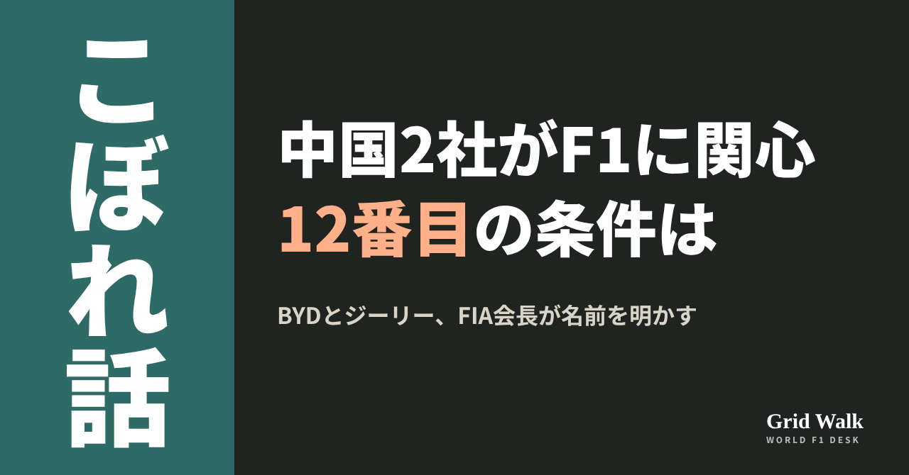<button class="cp dl" data-img="img/byd-geely-twelfth-team-20261114.png" data-name="byd-geely-twelfth-team-20261114_見出し画像.png">ダウンロード</button></li>
<li class="st"><div class="hd"><span class="no">2</span><b>タイトル</b></div><div class="bx" id="p5t">BYDとジーリーがF1に関心　12番目のチームの条件は</div><button class="cp" data-plain="p5t">タイトルをコピー</button></li>
<li class="st"><div class="hd"><span class="no">3</span><b>本文</b></div><div class="bx tall" id="p5r"><p>中国のBYDとジーリーが、F1参戦についてFIAに接触してきた。FIAのモハメド・ビン・スライエム会長がマドリードの会議でそう話したと、ドイツのF1-Insiderが11月11日に伝え、日本でもAUTOSPORT webが13日に報じました。会長はBYDに既存のチームを買うよう勧めましたが、BYDは自分たちのチームを望んだといいます（要約はサイトに https://f1gridwalk.github.io/news/de-f1insider-byd-geely-twelfth-team/ ）。</p><p>9月の元の報道と11月の各国の記事へのリンク、11番目のチームの解説はサイトで → <a href="https://f1gridwalk.github.io/lens/byd-geely-twelfth-team-20261114/?utm_source=note&amp;utm_campaign=byd-geely-twelfth-team-20261114">https://f1gridwalk.github.io/lens/byd-geely-twelfth-team-20261114/?utm_source=note&amp;utm_campaign=byd-geely-twelfth-team-20261114</a></p><p>ただ、2つの記事は発言の日付を書いていません。同じマドリードの会合での同じ内容の発言は、9月11日にブラジルのGrande PrêmioとイギリスのThe Raceが報じていました。ブラジルのA Críticaによると、会合は9月11日（金）の「フォーラム・ヨーロッパ」です。11月10日にアメリカのElectrekなどがGrande Prêmioの記事を出典に報じ、そのあと各国の記事が続きました（Grande Prêmioの記事も同じ日に更新されています）。</p><h2>会長が明かした2つの名前</h2><blockquote><p>「参入を希望するメーカーと面談した。そのなかのひとつがBYD、もうひとつはジーリーだ」（ビン・スライエム、AUTOSPORT web／日本）</p></blockquote><p>F1-Insiderによると、ジーリーはボルボ、ポールスター、ロータスを傘下に持つグループです。具体的な話の中身が出たのはBYDのほうです。BYDはこの夏、ただのスポンサーではなく、自社の技術を持ち込めるときだけ参戦すると話していた、と同サイトは伝えています。</p><h2>12番目のチームに求められるもの</h2><p>会長は、関心を示すだけでは足りないとして、実現できると示せる提案を求めました。規則についてはこう話しています。</p><blockquote><p>「規則が、中国のメーカーがいるというだけで変えられることはない」（ビン・スライエム、F1-Insider／ドイツ）</p></blockquote><p>Grande Prêmioによると、いまF1には11チームから増やす正式な手続きはなく、FIAも新しいチームを探しているわけではありません。本気だと分かれば、参加の希望を受け付ける手続きを新たに開く可能性はある、と同サイトは書いています。F1-Insiderは、V8に戻して電気の割合を小さくする案が、電気に強い2社の方向と合わないかもしれないとも指摘しました。</p><h2>11番目のキャデラックは2年あまり</h2><p>FIAによると、前回の募集は2023年2月に始まり、7つの応募のうち4つが審査に進みました。10月にアンドレッティ／キャデラックだけが条件を満たしたと発表しましたが、F1の商業面を担うFOMは2024年1月にこれを退けます。GMとの原則の合意（The Raceによると2024年11月）を経て、参戦が認められたのは2025年3月7日。2016年のハース以来の新しいチームでした。</p><p>会長は2025年7月のイギリスGPの際にも、中国が加わればもっとお金をもたらすのでは、という考えをロイター通信に話していました。それを伝えた独Motorsport-Total.comは、参戦の条件は前回の募集のときよりさらに厳しくなっているとも書いています。AUTOSPORT webも、12番目のチームの入札を始めるには、キャデラックのときより厳しい基準が求められる可能性があると報じています。</p><p>編集部としては、11月の報道は新しい発言というより、9月の発言があらためて広まったものと見ています。中国から12番目のチームを、という会長の考えは、少なくとも去年の夏から変わっていないようです。11番目のチームの成り立ちは、ルール解説に（ https://f1gridwalk.github.io/deep/rules/eleventh-team/ ）。</p><p><strong>BYDとジーリー、12番目のチームとしてF1で見てみたいのはどちらですか？</strong></p><p>━━━━━━━━━━</p><p><strong>F1 Grid Walk では、世界のF1ニュースを毎日日本語でまとめています。</strong></p><p>海外の記事の要約を、毎日載せています。</p><p><a href="https://f1gridwalk.github.io/">https://f1gridwalk.github.io/</a></p><p>ほかの海外記事も読みたい方は、F1 Grid Walkへ。</p><p><a href="https://f1gridwalk.github.io/lens/byd-geely-twelfth-team-20261114/">https://f1gridwalk.github.io/lens/byd-geely-twelfth-team-20261114/</a></p><p>━━━━━━━━━━</p><p><a href="https://f1-insider.com/formel-1-zwoelftes-team-neue-hersteller-83913/">出典：F1-Insider（ドイツ）</a></p><p><a href="https://carview.yahoo.co.jp/news/detail/34f7246f7f43b7a1dfacda49a24ca4727e1fe4db">出典：AUTOSPORT web（carview!）（日本）</a></p><p><a href="https://grandepremio.com/en/f1/fia-reveals-talks-with-byd-and-geely-over-potential-12th-team/">出典：Grande Prêmio（ブラジル）</a></p><p><a href="https://acritica.net/esportes/automobilismo/fia-avalia-12a-equipe-na-f1-e-mira-projeto-chines-com-byd-ou-geely/">出典：A Crítica（ブラジル）</a></p><p><a href="https://electrek.co/2026/11/10/byd-geely-fia-talks-12th-f1-team/">出典：Electrek（アメリカ）</a></p><p><a href="https://www.fia.com/news/cadillac-f1-how-fia-paved-way-11th-team-formula-1">出典：FIA（フランス）</a></p><p><a href="https://www.the-race.com/formula-1/cadillac-gm-general-motors-f1-2026-entry-approved/">出典：The Race（イギリス）</a></p><p><a href="https://www.motorsport-total.com/formel-1/news/mehr-teams-als-rennen-fia-praesident-sulayem-will-zwoelftes-team-aus-china-25070911">出典：Motorsport-Total.com（ドイツ）</a></p></div><button class="cp" data-rich="p5r">本文をコピー</button></li>
<li class="st"><div class="hd"><span class="no">4</span><b>ハッシュタグ</b></div><div class="bx" id="p5h">#F1 #F1jp #BYD #ジーリー #FIA #ビンスライエム #キャデラック #F1新チーム #F1こぼれ話 #OFFGRID</div><button class="cp" data-plain="p5h">タグをコピー</button></li>
</ol><h3 class="xh">X</h3><ol class="steps">
<li class="st im"><div class="hd"><b>X用の画像</b><em>画像</em></div>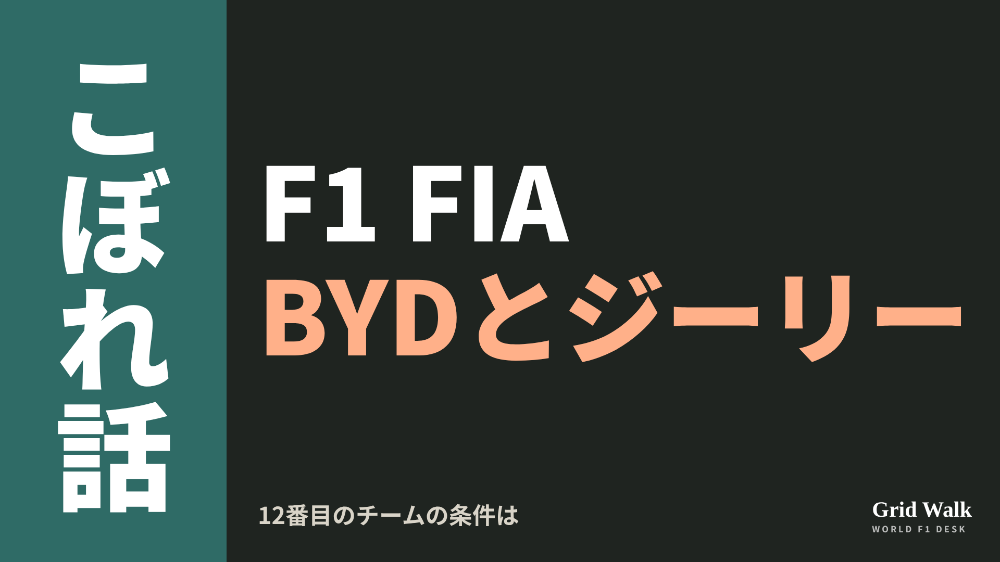<button class="cp dl" data-img="img/x_byd-geely-twelfth-team-20261114.png" data-name="x_byd-geely-twelfth-team-20261114.png">ダウンロード</button></li>
<li class="st"><div class="hd"><b>① noteをシェアするときの文</b></div><div class="bx" id="p5x0">中国のBYDとジーリーがF1参戦でFIAに接触、と11月に各国が報じました。もとは9月のマドリードでの会長の発言として伝えられていたもの。12番目のチームの条件をnoteにまとめました #F1jp #BYD</div><button class="cp" data-plain="p5x0">コピー</button></li>
<li class="st"><div class="hd"><b>② ①への返信</b></div><div class="bx" id="p5x1">ほかの海外記事も読みたい方は、F1 Grid Walkへ。
https://f1gridwalk.github.io/lens/byd-geely-twelfth-team-20261114/?utm_source=x&amp;utm_campaign=byd-geely-twelfth-team-20261114</div><button class="cp" data-plain="p5x1">コピー</button></li>
<li class="st"><div class="hd"><b>③ ②への返信</b></div><div class="bx" id="p5x2">毎日の海外F1ニュースは、日本語でこちらにまとめています。
https://f1gridwalk.github.io/</div><button class="cp" data-plain="p5x2">コピー</button></li>
</ol></section><section class="part" id="p6"><h2><span class="tag">OFF GRID</span>メルセデス、ADUOなしで最大20馬力上積みか　伊サイト報道</h2><p class="sub">サイトに公開：18:25</p><ol class="steps">
<li class="st im"><div class="hd"><span class="no">1</span><b>見出し画像</b><em>画像</em></div>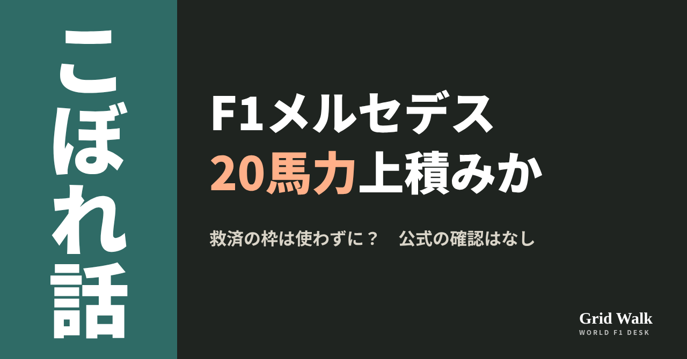<button class="cp dl" data-img="img/mercedes-twenty-horsepower-report-20261114.png" data-name="mercedes-twenty-horsepower-report-20261114_見出し画像.png">ダウンロード</button></li>
<li class="st"><div class="hd"><span class="no">2</span><b>タイトル</b></div><div class="bx" id="p6t">メルセデス、ADUOなしで最大20馬力上積みか　伊サイト報道</div><button class="cp" data-plain="p6t">タイトルをコピー</button></li>
<li class="st"><div class="hd"><span class="no">3</span><b>本文</b></div><div class="bx tall" id="p6r"><p>メルセデスは、ADUOで認められた今季分の追加の改良を、まだ使っていません。それでもエンジンは最大20馬力ほど強くなっていたかもしれない、という話が出ました。独F1-Insider（11月13日）が、伊AutoRacer.itの報道として伝えたものです。メルセデスもFIAも、この数字を公式には認めていません。</p><p>独F1-Insiderの記事と、6月にウォルフ代表が話したThe Raceの記事へのリンクはサイトで → <a href="https://f1gridwalk.github.io/lens/mercedes-twenty-horsepower-report-20261114/?utm_source=note&amp;utm_campaign=mercedes-twenty-horsepower-report-20261114">https://f1gridwalk.github.io/lens/mercedes-twenty-horsepower-report-20261114/?utm_source=note&amp;utm_campaign=mercedes-twenty-horsepower-report-20261114</a></p><h2>10〜20馬力は、どこから</h2><p>F1-Insiderによると、AutoRacer.itが伝えた上積みは10〜20馬力です。理由とされたのは、エンジンの制御の調整（キャリブレーション）の改善と、バッテリーの変更。バッテリーの変更はシュピールベルク（オーストリアGP）で入ったもので、FIAが認めたうえで、本来は信頼性を上げるためのものだったといいます。F1-Insiderも数字は公式に確かめられていないと書き、メルセデスやFIAのコメントは載せていません。</p><p>比べる相手はフェラーリです。同じ記事によると、フェラーリはADUOの2回をオーストリアと地元モンツァで使い、モンツァでは改良したターボと、形を変えた燃焼室を入れました。英Autosportはこの改良で見込まれる上積みを約15馬力としていた、とF1-Insiderは伝えています。見積もりが正しければ、メルセデスはこの改良の分を計算の上では帳消しにできたかもしれない、ただし馬力だけではコース上の差の変化は読み取れない、というのがF1-Insiderの書き方です。</p><h2>6月、ウォルフ代表は「改良は入っていない」</h2><p>オーストリアGPで入れた新しいパワーユニット（PU）について、英The Raceは6月30日、メルセデスのエンジンは良くなったが、それはADUOによるものではないと報じていました。中身は信頼性のための見直しで、とくに制御の電子機器は、カナダでのラッセル、バルセロナでのアントネッリのリタイアを繰り返さないための見直しだったといいます。このとき新しくした部品にはバッテリーもあった、とThe Raceは書いています。小さな上積みは、信頼性への自信から少し強めに回せるようになったことと、寿命の終わりの劣化がない新しいエンジンから来た、という説明です。ADUOの枠が伝えられた6月7日のあと、ウォルフ代表はこう話していました。</p><blockquote><p>「いや、ただの新しいパワーユニットだった」「そのぶん走った距離が少なく、少しだけピリッとしている。でも改良は入っていないし、今のところ改良の予定もない」（ウォルフ、The Race／イギリス）</p></blockquote><h2>残りは3戦、使わなければ枠は消える</h2><p>ただ、そのあと予定は変わりました。改良型PUは10月のアメリカGPで入れる予定でしたが間に合わず、先へずれました（10月のニュース https://f1gridwalk.github.io/news/en-therace-mercedes-aduo-engine-delay/ ）。ADUOは、FIAが各メーカーの内燃エンジン（ICE）の性能を比べ、いちばん良いメーカーから2％以上遅れたメーカーに追加の改良を認める仕組みです（DEEP GRIDの解説 https://f1gridwalk.github.io/deep/aduo-explained/ ）。メルセデスの枠は今季1回と来季1回で、今季分はまだ入っていません（11月11日のコラム https://f1gridwalk.github.io/lens/aduo-third-review-honda-20261111/ ）。F1公式サイトによると、今季分はシーズンの終わり（最終戦）までに入れなければ消えます。</p><p>F1-Insiderは、新しいターボはブラジルでも使われなかったと書き、続けて、ラスベガスが世界王者アントネッリの車での初登場の候補だというAutoRacerの話を紹介しています。こちらも確定ではありません。今季の残りは、ラスベガス、カタール、アブダビの3戦です（F1公式）。</p><p><strong>ADUOの枠を持つメーカーが、枠を使わずに設定の見直しや信頼性の改善で伸びていたとしたら、救済の仕組みとして問題だと思いますか？</strong></p><p>━━━━━━━━━━</p><p><strong>F1 Grid Walk では、世界のF1ニュースを毎日日本語でまとめています。</strong></p><p>海外の記事の要約を、毎日載せています。</p><p><a href="https://f1gridwalk.github.io/">https://f1gridwalk.github.io/</a></p><p>ほかの海外記事も読みたい方は、F1 Grid Walkへ。</p><p><a href="https://f1gridwalk.github.io/lens/mercedes-twenty-horsepower-report-20261114/">https://f1gridwalk.github.io/lens/mercedes-twenty-horsepower-report-20261114/</a></p><p>━━━━━━━━━━</p><p><a href="https://f1-insider.com/formel-1-mercedes-motor-ohne-update-20-ps-83950/">出典：F1-Insider（ドイツ）</a></p><p><a href="https://www.the-race.com/formula-1/mercedes-has-no-aduo-f1-engine-upgrade-planned/">出典：The Race（イギリス）</a></p><p><a href="https://www.formula1.com/en/latest/article/explained-what-is-f1s-aduo-engine-upgrade-system-and-how-will-it-work.2A67N47ntcdQbKhHOd7GdD">出典：Formula1.com（イギリス）</a></p><p><a href="https://www.formula1.com/en/results/2026/races">出典：Formula1.com（イギリス）</a></p></div><button class="cp" data-rich="p6r">本文をコピー</button></li>
<li class="st"><div class="hd"><span class="no">4</span><b>ハッシュタグ</b></div><div class="bx" id="p6h">#F1 #F1jp #メルセデス #ADUO #パワーユニット #アントネッリ #ラスベガスGP #F1こぼれ話 #OFFGRID</div><button class="cp" data-plain="p6h">タグをコピー</button></li>
</ol><h3 class="xh">X</h3><ol class="steps">
<li class="st im"><div class="hd"><b>X用の画像</b><em>画像</em></div>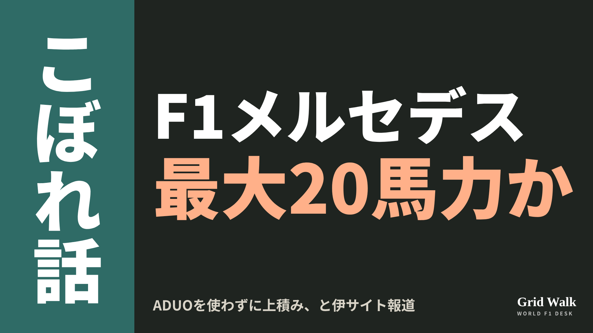<button class="cp dl" data-img="img/x_mercedes-twenty-horsepower-report-20261114.png" data-name="x_mercedes-twenty-horsepower-report-20261114.png">ダウンロード</button></li>
<li class="st"><div class="hd"><b>① noteをシェアするときの文</b></div><div class="bx" id="p6x0">メルセデスがADUOの枠を使わずに最大20馬力を上積みした可能性、と独F1-Insiderが伊AutoRacer.itの報道として伝えました。数字は非公式で、メルセデスもFIAも認めていません。noteにまとめました #F1jp #メルセデス</div><button class="cp" data-plain="p6x0">コピー</button></li>
<li class="st"><div class="hd"><b>② ①への返信</b></div><div class="bx" id="p6x1">ほかの海外記事も読みたい方は、F1 Grid Walkへ。
https://f1gridwalk.github.io/lens/mercedes-twenty-horsepower-report-20261114/?utm_source=x&amp;utm_campaign=mercedes-twenty-horsepower-report-20261114</div><button class="cp" data-plain="p6x1">コピー</button></li>
<li class="st"><div class="hd"><b>③ ②への返信</b></div><div class="bx" id="p6x2">毎日の海外F1ニュースは、日本語でこちらにまとめています。
https://f1gridwalk.github.io/</div><button class="cp" data-plain="p6x2">コピー</button></li>
</ol></section><section class="part" id="p7"><h2><span class="tag">OFF GRID</span>ローソン「うん、行かせた」　メキシコで接触したフェルスタッペンを前へ</h2><p class="sub">サイトに公開：18:26</p><ol class="steps">
<li class="st im"><div class="hd"><span class="no">1</span><b>見出し画像</b><em>画像</em></div>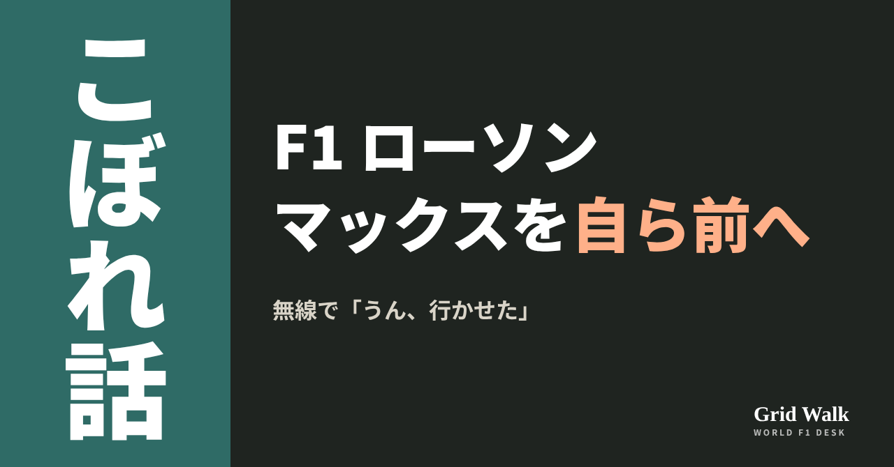<button class="cp dl" data-img="img/lawson-verstappen-sao-paulo-20261114.png" data-name="lawson-verstappen-sao-paulo-20261114_見出し画像.png">ダウンロード</button></li>
<li class="st"><div class="hd"><span class="no">2</span><b>タイトル</b></div><div class="bx" id="p7t">ローソン「うん、行かせた」　メキシコで接触したフェルスタッペンを前へ</div><button class="cp" data-plain="p7t">タイトルをコピー</button></li>
<li class="st"><div class="hd"><span class="no">3</span><b>本文</b></div><div class="bx tall" id="p7r"><p>「うん、行かせた」。11月8日のサンパウロGPで、レーシングブルズのリアム・ローソンは、レッドブルのマックス・フェルスタッペンを前に出したあと、無線でこう伝えました。2人はメキシコシティGPの練習走行で接触し、そろってグリッド降格を受けた間柄です。英PlanetF1が11月13日、このときの無線のやりとりを伝えています（サイトの要約 https://f1gridwalk.github.io/news/en-planetf1-lawson-verstappen-brazil-help/ ）。</p><p>無線のやりとりを伝えた元の記事へのリンクと、メキシコの接触を振り返ったコラムはサイトで → <a href="https://f1gridwalk.github.io/lens/lawson-verstappen-sao-paulo-20261114/?utm_source=note&amp;utm_campaign=lawson-verstappen-sao-paulo-20261114">https://f1gridwalk.github.io/lens/lawson-verstappen-sao-paulo-20261114/?utm_source=note&amp;utm_campaign=lawson-verstappen-sao-paulo-20261114</a></p><h2>9周目、後ろにフェルスタッペン</h2><p>PlanetF1によると、ローソンは3番グリッドからスタートし、スタートでランド・ノリスを抜いて、序盤は2位を走りました。一方のフェルスタッペンは21番手スタート。路面が乾いていくなかで追い上げ、アウディのニコ・ヒュルケンベルグを抜いた9周目、ローソンにこう無線が入りました。</p><blockquote><p>「後ろの車は、いまマックスです」（ローソンへの無線、PlanetF1／イギリス）</p></blockquote><p>このころローソンは、インターミディエイトタイヤのグレイニングに苦しんでいると、無線で伝えていました。</p><h2>1秒以上を失っても</h2><p>その2周後、ローソンはレタ・オポストで速度を落とし、フェルスタッペンを前に出しました。PlanetF1によると、これで1秒以上を失っています。記事は、この前後の無線のやりとりも伝えています。レースエンジニアのアレックス・イリオポロスにバランスの感触を聞かれたローソンは、こう答えました。</p><blockquote><p>「ただのグレイニングだから、フロントがまったくない。トラクションも、本当に、本当にひどい」（ローソン、PlanetF1／イギリス）</p></blockquote><p>スリックタイヤに替えるまで、このまま走り抜けるべきかとローソンが聞くと、エンジニアの答えはこうでした。</p><blockquote><p>「それがいちばんいい選択だと考えています」（ローソンのエンジニア、PlanetF1／イギリス）</p></blockquote><p>そして5位をフェルスタッペンに譲ったあとに出たのが、冒頭の言葉です。続けてローソンには、マクラーレンのオスカー・ピアストリが1秒後ろにいると伝えられました。</p><h2>本人の判断、レッドブルにも伝わるように</h2><p>PlanetF1によると、ローソンは無線でイリオポロスに、フェルスタッペンを前に出したのは自分の判断だったとはっきり伝えました（記事の地の文で、そのときの無線の言葉は載っていません）。記事には、チームが譲るよう指示した場面は出てきません。そのうえで記事は、ローソンがフェルスタッペンの追い上げを助けたことを、自分のチームにも、レッドブルにも分かるようにした、と伝えています。ただ、記事に出てくる無線は自分のエンジニアとのものだけで、レッドブルにどう伝わったかは書かれていません。レーシングブルズとレッドブルは、同じ系列の別のチームです。</p><p>背景にあるのはメキシコです。F1公式によると、FP2での接触のあと、スチュワードは2人のふるまいを受け入れられないものとして、それぞれ1グリッド降格とペナルティポイント1を科しました。そのときのフェルスタッペンとローソンの言葉は、コラム https://f1gridwalk.github.io/lens/lawson-verstappen-underestimated-20261107/ で紹介しています。</p><p>決勝はフェルスタッペンが2位、ローソンが7位でした（F1公式）。レースのあとの週に、ローソンは2027年もレーシングブルズで走ることが発表されています（PlanetF1。発表の中身は https://f1gridwalk.github.io/lens/racing-bulls-2027-confirmed-20261113/ ）。</p><p>編集部としては、譲ったことを無線ではっきり言葉にしたところに、メキシコの一件のあとのローソンの気配りがのぞくと見ています。</p><p><strong>席が決まる前に、メキシコで接触した相手に自分から道を空ける。あなたは、ローソンのこの判断をどう見ますか？</strong></p><p>━━━━━━━━━━</p><p><strong>F1 Grid Walk では、世界のF1ニュースを毎日日本語でまとめています。</strong></p><p>海外の記事の要約を、毎日載せています。</p><p><a href="https://f1gridwalk.github.io/">https://f1gridwalk.github.io/</a></p><p>ほかの海外記事も読みたい方は、F1 Grid Walkへ。</p><p><a href="https://f1gridwalk.github.io/lens/lawson-verstappen-sao-paulo-20261114/">https://f1gridwalk.github.io/lens/lawson-verstappen-sao-paulo-20261114/</a></p><p>━━━━━━━━━━</p><p><a href="https://www.planetf1.com/news/liam-lawson-alerted-red-bull-verstappen-brazil-help">出典：PlanetF1（イギリス）</a></p><p><a href="https://formula1.com/en/latest/article/verstappen-and-lawson-get-grid-penalties-after-clumsy-mexico-city-practice-clash.2m2ey8Pl7g5IfQfGeepilD">出典：Formula 1 公式（イギリス）</a></p><p><a href="https://www.formula1.com/en/results/2026/races/1299/aa/race-result">出典：Formula 1 公式（イギリス）</a></p></div><button class="cp" data-rich="p7r">本文をコピー</button></li>
<li class="st"><div class="hd"><span class="no">4</span><b>ハッシュタグ</b></div><div class="bx" id="p7h">#F1 #F1jp #ローソン #フェルスタッペン #レーシングブルズ #レッドブル #サンパウロGP #F1無線 #F1こぼれ話 #OFFGRID</div><button class="cp" data-plain="p7h">タグをコピー</button></li>
</ol><h3 class="xh">X</h3><ol class="steps">
<li class="st im"><div class="hd"><b>X用の画像</b><em>画像</em></div>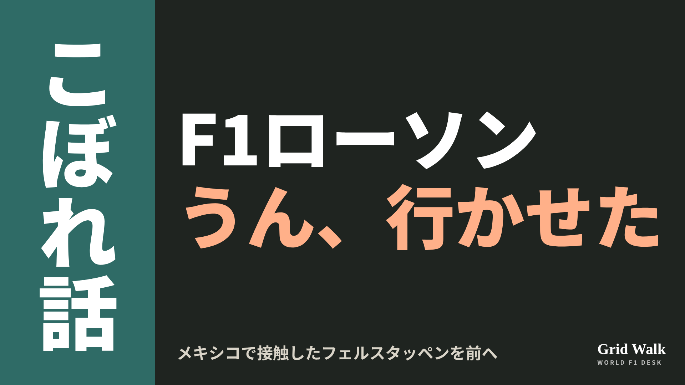<button class="cp dl" data-img="img/x_lawson-verstappen-sao-paulo-20261114.png" data-name="x_lawson-verstappen-sao-paulo-20261114.png">ダウンロード</button></li>
<li class="st"><div class="hd"><b>① noteをシェアするときの文</b></div><div class="bx" id="p7x0">サンパウロでタイヤに苦しんだローソンは、メキシコで接触したフェルスタッペンを前に出し、無線で「うん、行かせた」。英PlanetF1は本人の判断だったと書いています。noteにまとめました #F1jp #ローソン</div><button class="cp" data-plain="p7x0">コピー</button></li>
<li class="st"><div class="hd"><b>② ①への返信</b></div><div class="bx" id="p7x1">ほかの海外記事も読みたい方は、F1 Grid Walkへ。
https://f1gridwalk.github.io/lens/lawson-verstappen-sao-paulo-20261114/?utm_source=x&amp;utm_campaign=lawson-verstappen-sao-paulo-20261114</div><button class="cp" data-plain="p7x1">コピー</button></li>
<li class="st"><div class="hd"><b>③ ②への返信</b></div><div class="bx" id="p7x2">毎日の海外F1ニュースは、日本語でこちらにまとめています。
https://f1gridwalk.github.io/</div><button class="cp" data-plain="p7x2">コピー</button></li>
</ol></section><section class="part" id="p8"><h2><span class="tag">OFF GRID</span>ハミルトン「ここにいる限り、そうしていく」　変化を求め続ける</h2><p class="sub">サイトに公開：18:27</p><ol class="steps">
<li class="st im"><div class="hd"><span class="no">1</span><b>見出し画像</b><em>画像</em></div>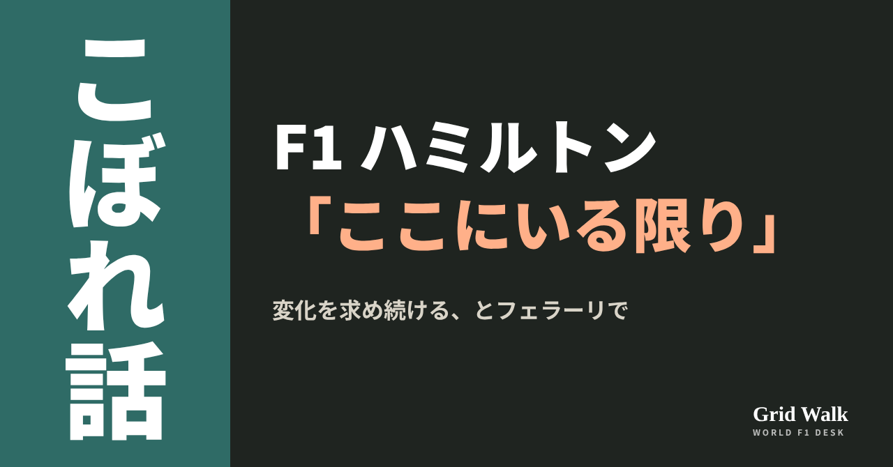<button class="cp dl" data-img="img/hamilton-as-long-as-im-here-20261114.png" data-name="hamilton-as-long-as-im-here-20261114_見出し画像.png">ダウンロード</button></li>
<li class="st"><div class="hd"><span class="no">2</span><b>タイトル</b></div><div class="bx" id="p8t">ハミルトン「ここにいる限り、そうしていく」　変化を求め続ける</div><button class="cp" data-plain="p8t">タイトルをコピー</button></li>
<li class="st"><div class="hd"><span class="no">3</span><b>本文</b></div><div class="bx tall" id="p8r"><p>「僕がここにいる限り、そうしていきます」。ルイス・ハミルトン（フェラーリ）が、これからもチームに変化を求め続けると話しました。イギリスのRacingNews365が11月13日に掲載した取材での言葉です。</p><p>元の記事へのリンクと、メキシコの1周目を各国がどう伝えたかはサイトで → <a href="https://f1gridwalk.github.io/lens/hamilton-as-long-as-im-here-20261114/?utm_source=note&amp;utm_campaign=hamilton-as-long-as-im-here-20261114">https://f1gridwalk.github.io/lens/hamilton-as-long-as-im-here-20261114/?utm_source=note&amp;utm_campaign=hamilton-as-long-as-im-here-20261114</a></p><p>F1公式の順位表では、ハミルトンはサンパウロGP後、261点の4位。3位のジョージ・ラッセル（メルセデス）とは1点差、2位のマックス・フェルスタッペン（レッドブル）とは18点差で、残りは3戦です。RacingNews365は、夏休みまでは王座を争っていたものの、その後は外れたと書いています。</p><h2>8年いるチームメイトと</h2><p>RacingNews365によると、フェラーリが最後にドライバーズタイトルを取ったのは2007年、コンストラクターズタイトルは2008年。そのチームを王者に戻すことが、移籍のねらいの一つだったといいます。取材では、フェラーリ育ちのシャルル・ルクレールの存在が変化を進めるうえで影響したか、とも聞かれ、こう答えています。</p><blockquote><p>「彼はここに長くいます。8年間で、このチームで9勝していて、チームにしっかり根づいている」「それが挑戦になることは、ずっと分かっていました」（ハミルトン、RacingNews365／イギリス）</p></blockquote><blockquote><p>「僕はずっとそれを尊重してきたし、チームにも働きかけてきました。シャルルといい関係を築き、溝を埋めて、調和を保って一緒に努力できるように、本当に力を尽くしてきました」「いつも敬意を払うようにしています。そして当然ながら、僕のような人間がチームに入ってくるのは、そう簡単なことではありません。僕はとても率直にものを言うし、押して、押して、押し続けるから」（同）</p></blockquote><p>2人はメキシコシティGPの1周目で争いました。RacingNews365は、これでフェラーリが1-2フィニッシュの見込みを逃したと書いています。各国の伝え方はコラム https://f1gridwalk.github.io/lens/hamilton-leclerc-rift-20261107/ で。</p><h2>僕も押される必要がある</h2><blockquote><p>「これまで本当にたくさんの変化を求めてきたし、これからももっと求めていく。僕がここにいる限り、そうしていきます」（ハミルトン、RacingNews365／イギリス）</p></blockquote><blockquote><p>「僕は勝つためにここにいる。勝つためには、周りの全員と一緒に働かなければならない」「みんなでボートを漕いでいて、全員が同じペース、同じ力で漕げるようにしようとしている。押さなければいけないし、僕も押さなければいけない」「僕自身も、上へ行くために押される必要があります」（同）</p></blockquote><blockquote><p>「僕たちはいつだって、もっと上に行けるし、もっと良くなれる。このチームは来年、選手権を争えると心から信じています」「いまは空力の責任者や車両運動の責任者と一緒に、今年の車の良さを保ちながら、もっと良くできる細かな点を直そうとしているところです」（同）</p></blockquote><p>RacingNews365は、SF-26の車体はグリッドでも指折りの強さとされる一方、パワーユニットは直線の終わりの伸びが足りないと書き、フェラーリがイタリアGPでADUOの枠を使った新しい設計を入れたとも伝えています（ADUOは https://f1gridwalk.github.io/deep/aduo-explained/ ）。</p><p>編集部としては、ルクレールとの調和を語る同じ口で、自分は押し続ける人間だと認め、さらに自分も押されたいと話しているところが目を引くと見ています。押す先は、チームメイト1人ではなく、チーム全体と自分自身に向いているように読めます。</p><p><strong>押し続けることと、調和を保つこと。フェラーリを王者に戻すには、どちらがより大事だと思いますか？</strong></p><p>━━━━━━━━━━</p><p><strong>F1 Grid Walk では、世界のF1ニュースを毎日日本語でまとめています。</strong></p><p>海外の記事の要約を、毎日載せています。</p><p><a href="https://f1gridwalk.github.io/">https://f1gridwalk.github.io/</a></p><p>ほかの海外記事も読みたい方は、F1 Grid Walkへ。</p><p><a href="https://f1gridwalk.github.io/lens/hamilton-as-long-as-im-here-20261114/">https://f1gridwalk.github.io/lens/hamilton-as-long-as-im-here-20261114/</a></p><p>━━━━━━━━━━</p><p><a href="https://racingnews365.com/lewis-hamilton-fires-how-its-going-to-be-vow-after-ferrari-f1-furore">出典：RacingNews365（イギリス）</a></p><p><a href="https://www.formula1.com/en/results/2026/drivers">出典：F1公式サイト（イギリス）</a></p><p><a href="https://www.formula1.com/en/results/2026/races">出典：F1公式サイト（イギリス）</a></p></div><button class="cp" data-rich="p8r">本文をコピー</button></li>
<li class="st"><div class="hd"><span class="no">4</span><b>ハッシュタグ</b></div><div class="bx" id="p8h">#F1 #F1jp #ハミルトン #フェラーリ #ルクレール #サンパウロGP #F1こぼれ話 #OFFGRID</div><button class="cp" data-plain="p8h">タグをコピー</button></li>
</ol><h3 class="xh">X</h3><ol class="steps">
<li class="st im"><div class="hd"><b>X用の画像</b><em>画像</em></div>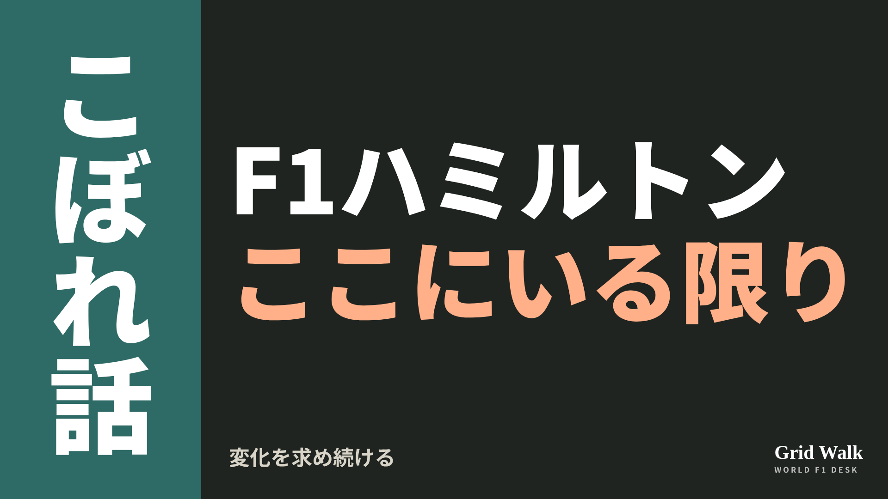<button class="cp dl" data-img="img/x_hamilton-as-long-as-im-here-20261114.png" data-name="x_hamilton-as-long-as-im-here-20261114.png">ダウンロード</button></li>
<li class="st"><div class="hd"><b>① noteをシェアするときの文</b></div><div class="bx" id="p8x0">ハミルトンは、フェラーリに変化を求め続けると話し「僕がここにいる限り、そうしていきます」。ルクレールとの関係と来季への期待もnoteにまとめました #F1jp #ハミルトン</div><button class="cp" data-plain="p8x0">コピー</button></li>
<li class="st"><div class="hd"><b>② ①への返信</b></div><div class="bx" id="p8x1">ほかの海外記事も読みたい方は、F1 Grid Walkへ。
https://f1gridwalk.github.io/lens/hamilton-as-long-as-im-here-20261114/?utm_source=x&amp;utm_campaign=hamilton-as-long-as-im-here-20261114</div><button class="cp" data-plain="p8x1">コピー</button></li>
<li class="st"><div class="hd"><b>③ ②への返信</b></div><div class="bx" id="p8x2">毎日の海外F1ニュースは、日本語でこちらにまとめています。
https://f1gridwalk.github.io/</div><button class="cp" data-plain="p8x2">コピー</button></li>
</ol></section></main><script>
function done(b,msg){const t=b.dataset.t||b.textContent;b.dataset.t=t;b.classList.add('ok');b.textContent=msg||'コピーしました';setTimeout(()=>{b.classList.remove('ok');b.textContent=t},2000)}
function selectEl(el){const r=document.createRange();r.selectNodeContents(el);const s=getSelection();s.removeAllRanges();s.addRange(r)}
async function rich(el,b){
  try{await navigator.clipboard.write([new ClipboardItem({'text/html':new Blob([el.innerHTML],{type:'text/html'}),'text/plain':new Blob([el.innerText],{type:'text/plain'})})]);done(b);return}catch(e){}
  selectEl(el);let ok=false;try{ok=document.execCommand('copy')}catch(e){}
  if(ok){getSelection().removeAllRanges();done(b)}else{done(b,'選択しました。コピーしてください')}}
async function plain(el,b){
  try{await navigator.clipboard.writeText(el.innerText);done(b);return}catch(e){}
  selectEl(el);let ok=false;try{ok=document.execCommand('copy')}catch(e){}
  if(ok){getSelection().removeAllRanges();done(b)}else{done(b,'選択しました。コピーしてください')}}
let dlns=null;(async()=>{try{dlns=await window.claude?.use?.("downloads")}catch(e){dlns=null}})();
async function img(src,b){
  b.dataset.t=b.dataset.t||b.textContent;
  if(!dlns){try{dlns=await window.claude?.use?.("downloads")}catch(e){}}
  if(!dlns){b.textContent='ダウンロードできませんでした';setTimeout(()=>{b.textContent=b.dataset.t},3500);return}
  try{const blob=await fetch(src).then(r=>r.blob());b.textContent='保存の確認を開いています…';
    await dlns.save({filename:b.dataset.name,data:blob});done(b,'ダウンロードしました')}
  catch(e){const c=e&&e.code;b.textContent=c==='declined'?'キャンセルしました':c==='rate_limited'?'少し待ってからもう一度押してください':'ダウンロードできませんでした';setTimeout(()=>{b.textContent=b.dataset.t},3500)}}
document.querySelectorAll('.cp').forEach(b=>b.addEventListener('click',()=>{
  if(b.dataset.rich)rich(document.getElementById(b.dataset.rich),b);
  else if(b.dataset.plain)plain(document.getElementById(b.dataset.plain),b);
  else img(b.dataset.img,b)}));
</script>